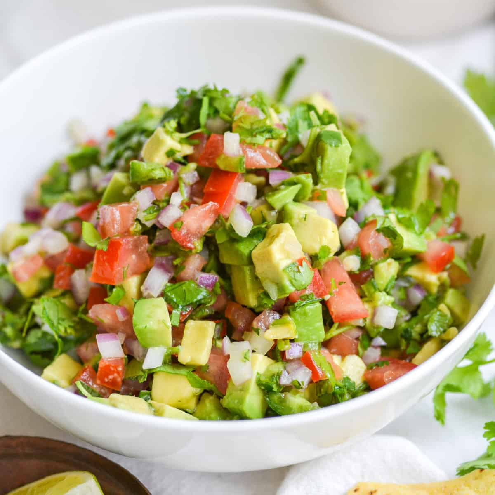

Pico de Gallo

Description
A fresh and chunky salsa made with tomatoes, onion, cilantro, and lime juice.
Ingredients
- 4 ripe tomatoes, diced
- 1/2 cup diced onion
- 1/4 cup chopped fresh cilantro
- 1 jalapeño, finely chopped
- 1 tablespoon lime juice
- 1/2 teaspoon salt
Instructions
- In a medium bowl, mix diced tomatoes, onion, cilantro, and jalapeño.
- Stir in lime juice and salt; mix well.
- Chill for 15-20 minutes to enhance the flavor.
- Serve as a topping for tacos, burritos, or alongside chips.